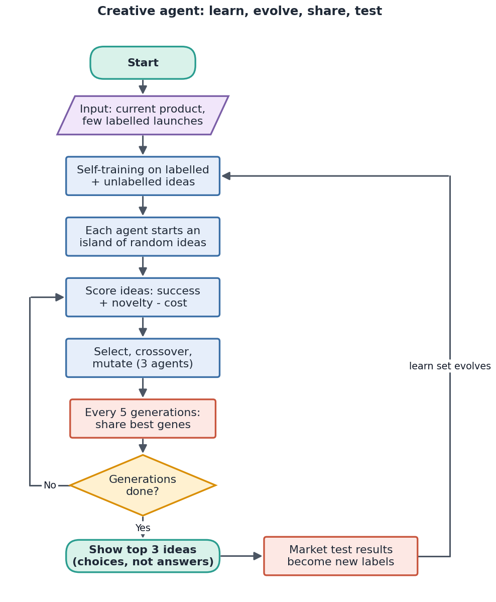
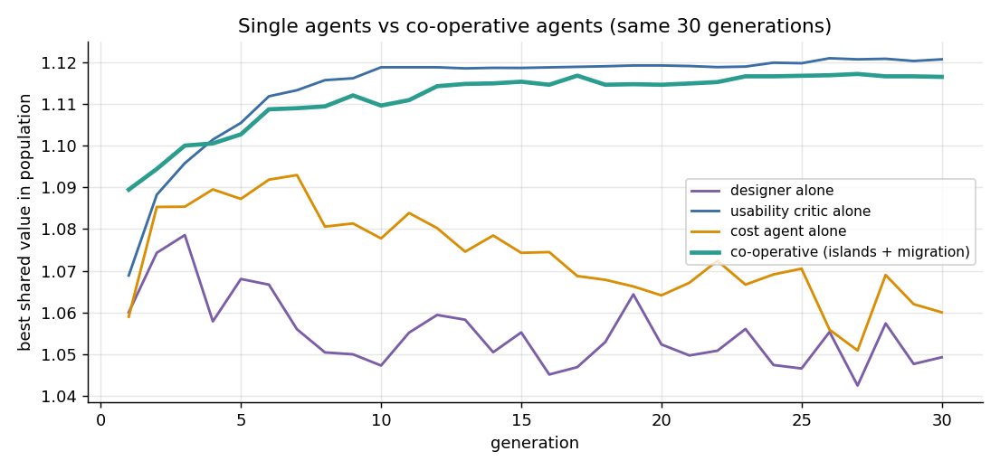
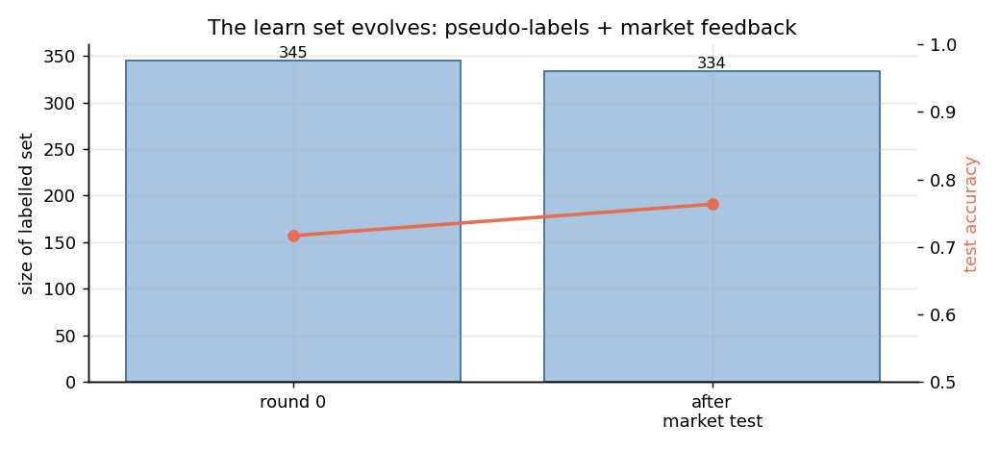
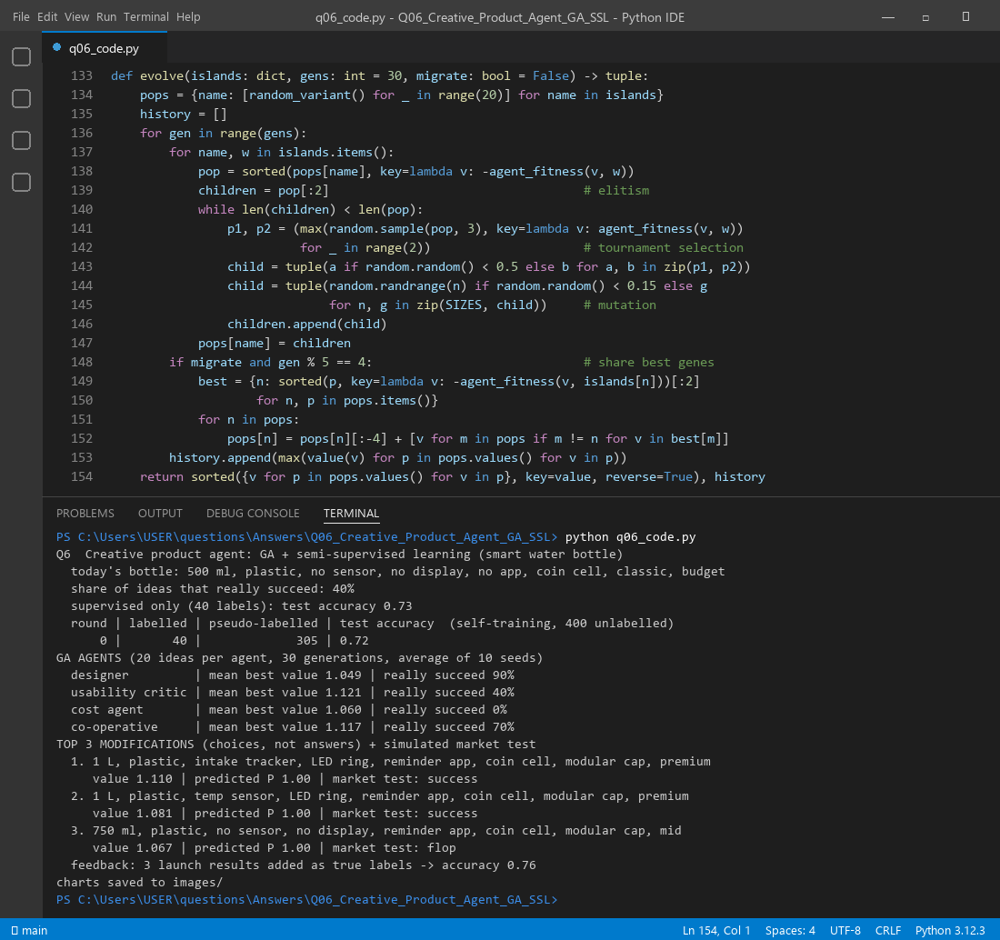

A company has one product and only a few past launch results. The agent does two jobs. First, it learns what sells from the few labelled launches plus many unlabelled ideas (semi-supervised learning). Second, it invents variants with a genetic algorithm (GA) and uses what it learned to score them. Creativity comes from the fitness: it rewards predicted success + novelty − cost, not success alone. The agent hands back a short list of options. It does not give one verdict.
| Part | What it does here |
|---|---|
| Chromosome | 8 genes, each picks an option (e.g. sensor = intake tracker) |
| Semi-supervised learner | Self-training with logistic regression. It labels its own confident guesses and learns again, so the learn set evolves |
| Fitness | w1·P(success) + w2·novelty − w3·cost |
| Operators | Tournament selection, uniform crossover (mix genes of two parents), mutation (15% per gene), elitism (keep the 2 best) |
| Exit | 30 generations, then show the top 3 ideas. Real market results go back in as labels |
A normal agent maximises one number in a fixed world. A creative agent changes all four parts of PEAS and adds two blocks to the agent structure.
| Ordinary product agent | Creative agent (the change) | |
|---|---|---|
| Performance | Predicted sales | Success + novelty + usefulness − cost, checked by a creativity calibrator |
| Environment | Our own sales data | Open and dynamic: competitors, customer reviews, IoT usage data, ideas from other products |
| Actuators | Report one best design | Generate variants, combine features, and present ranked choices |
| Sensors | Sales figures | Also senses previous performance and competing performance and user reactions |
In the agent structure we add a creativity evaluator (the novelty score) and a conceptual space expander (crossover and mutation create gene combinations never launched). The learning agent's problem generator is the GA, and its critic is the market test.

model ← SelfTraining(labelled launches, unlabelled ideas) # semi-supervised fitness_a(v) ← w1_a·P_model(v) + w2_a·novelty(v) − w3_a·cost(v) # per agent a island[a] ← 20 random ideas, for each agent a in {designer, critic, cost} for gen = 1 to 30: for each agent a: keep 2 best ideas (elitism) repeat until island full: p1, p2 ← tournament picks; child ← uniform_crossover(p1, p2) mutate each gene with probability 0.15 if gen is a multiple of 5: each island receives the best 2 ideas of the others top3 ← best ideas by shared value; run market test add test results to labelled set; retrain model # the learn set evolves
Three agents look at the same bottle with different eyes. All three share the same learned model, and they differ only in fitness weights (success, novelty, cost):
| Agent | Cares about | Weights (P, novelty, cost) |
|---|---|---|
| Designer | bold, new ideas | 0.5, 1.0, 0.0 |
| Usability critic | will users like it? | 1.0, 0.1, 0.1 |
| Cost agent | cheap to build | 0.6, 0.0, 0.8 |
In the co-operative run the islands trade their best genes every 5 generations. Results, averaged over 10 random seeds:
| Setup | Mean best shared value | Ideas that really succeed |
|---|---|---|
| Designer alone | 1.049 | 90% |
| Usability critic alone | 1.121 | 40% |
| Cost agent alone | 1.060 | 0% |
| Co-operative (islands + migration) | 1.117 | 70% |

Self-training labelled 305 of the 400 unlabelled ideas itself, so the learn set grew from 40 to 345. Test accuracy stayed about the same (0.73 supervised, 0.72 self-trained), so with so few labels the pseudo-labels did not add real accuracy. What did help was real feedback: after the 3 best ideas were tested, accuracy rose to 0.76. The top 3 ideas the co-operative agents suggested:
| # | Suggested bottle | Value | Market test |
|---|---|---|---|
| 1 | 1 L, plastic, intake tracker, LED ring, reminder app, coin cell, modular cap, premium | 1.110 | success |
| 2 | 1 L, plastic, temp sensor, LED ring, reminder app, coin cell, modular cap, premium | 1.081 | success |
| 3 | 750 ml, plastic, no sensor, no display, reminder app, coin cell, modular cap, mid | 1.067 | flop |
Two of three succeeded. The ideas are creative: none was in the product line, and the "modular cap + app + sensor" combination is new. The flop shows why the agent returns choices, not answers: a human or a test still decides.


Files in this folder: q06_code.py (source), q06_code.ipynb (Colab/Jupyter version, already run),
q06_output.txt (console output), images/ (all figures).